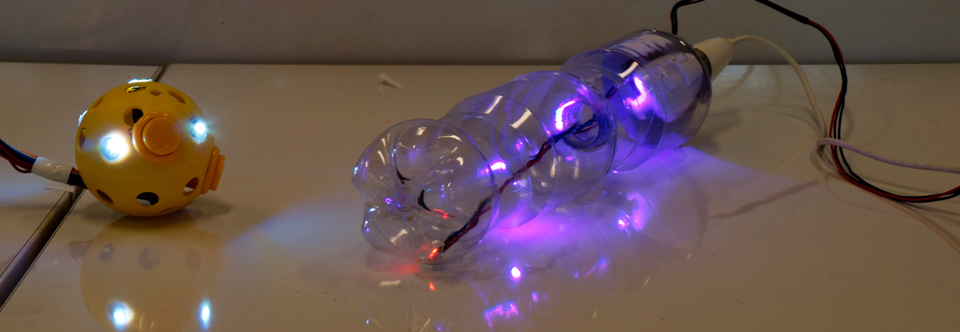
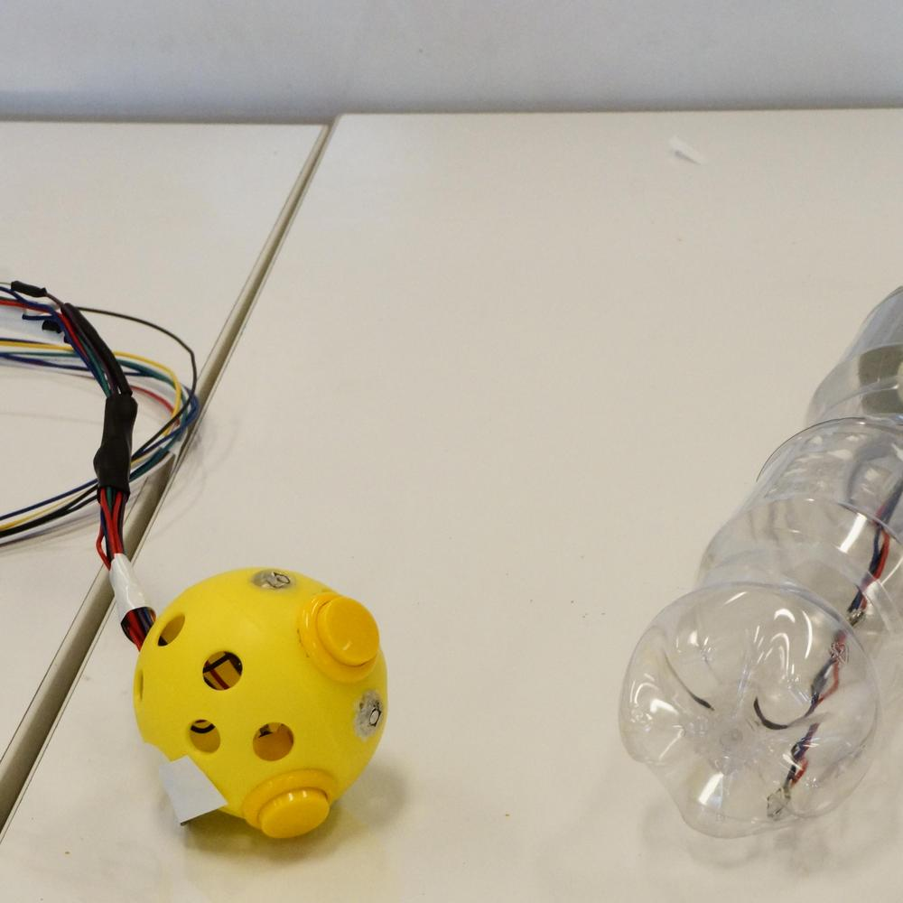
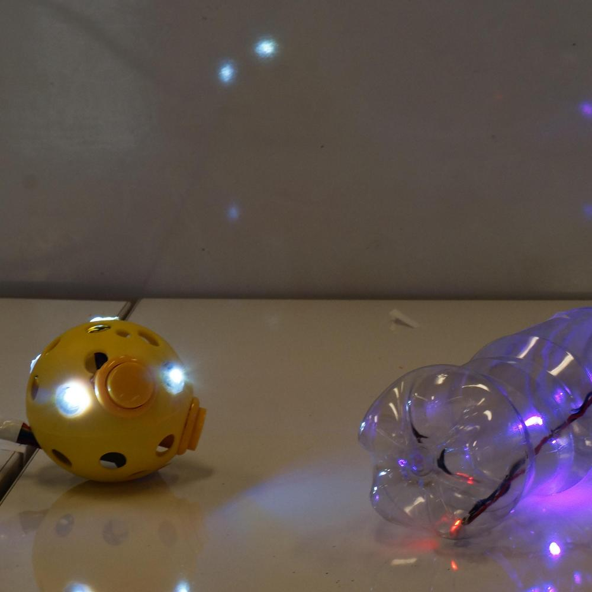
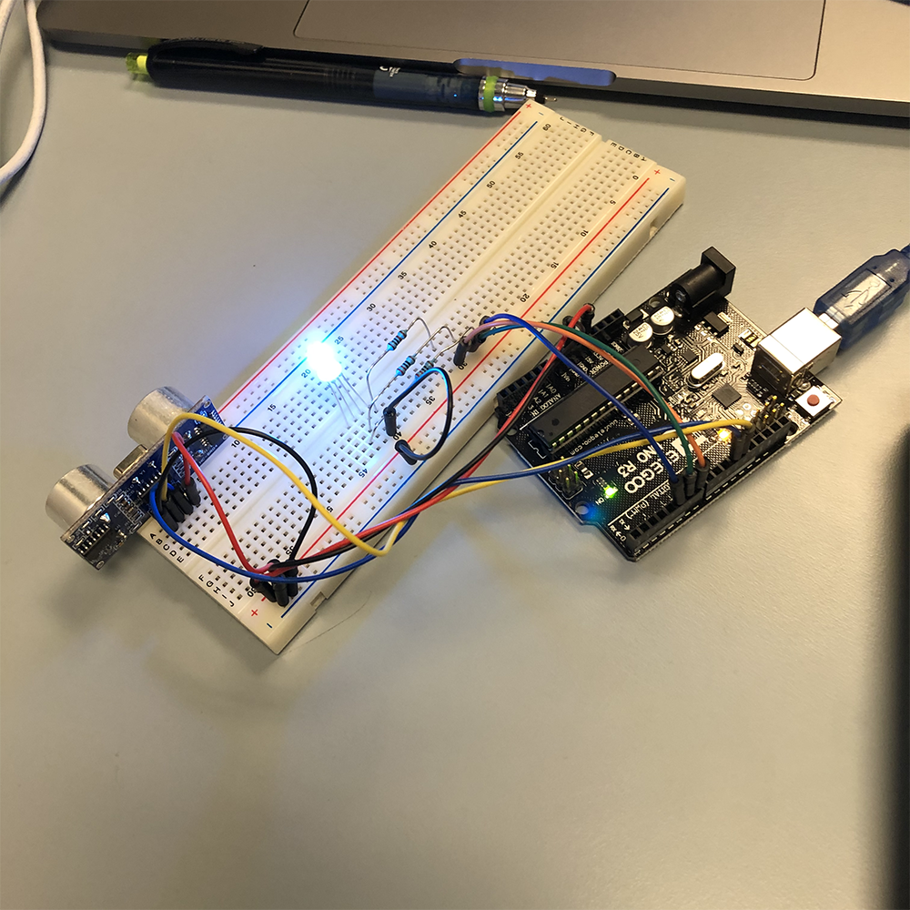
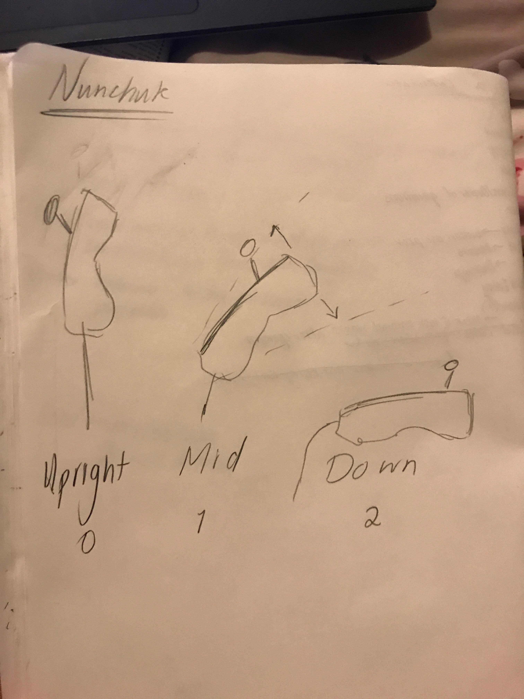
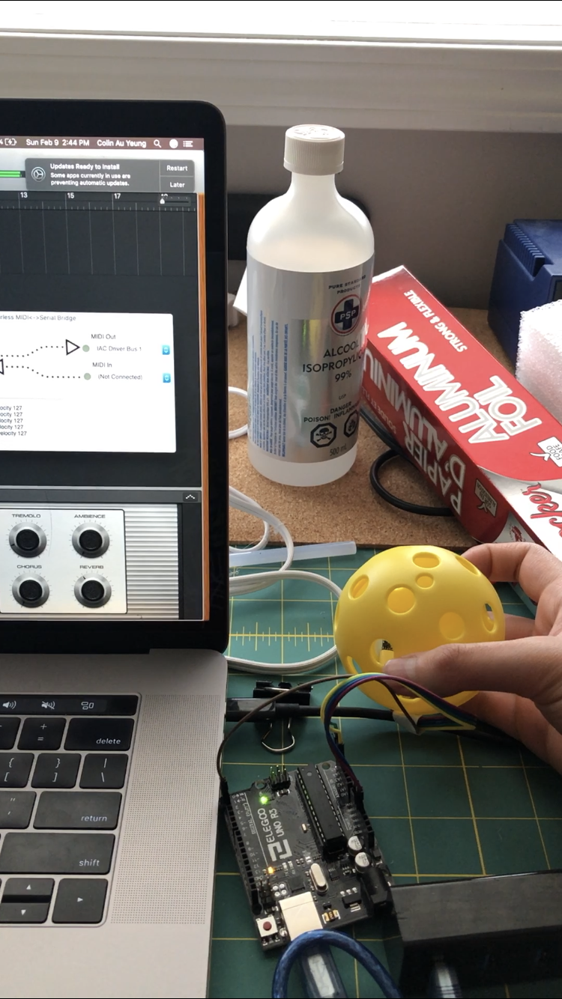
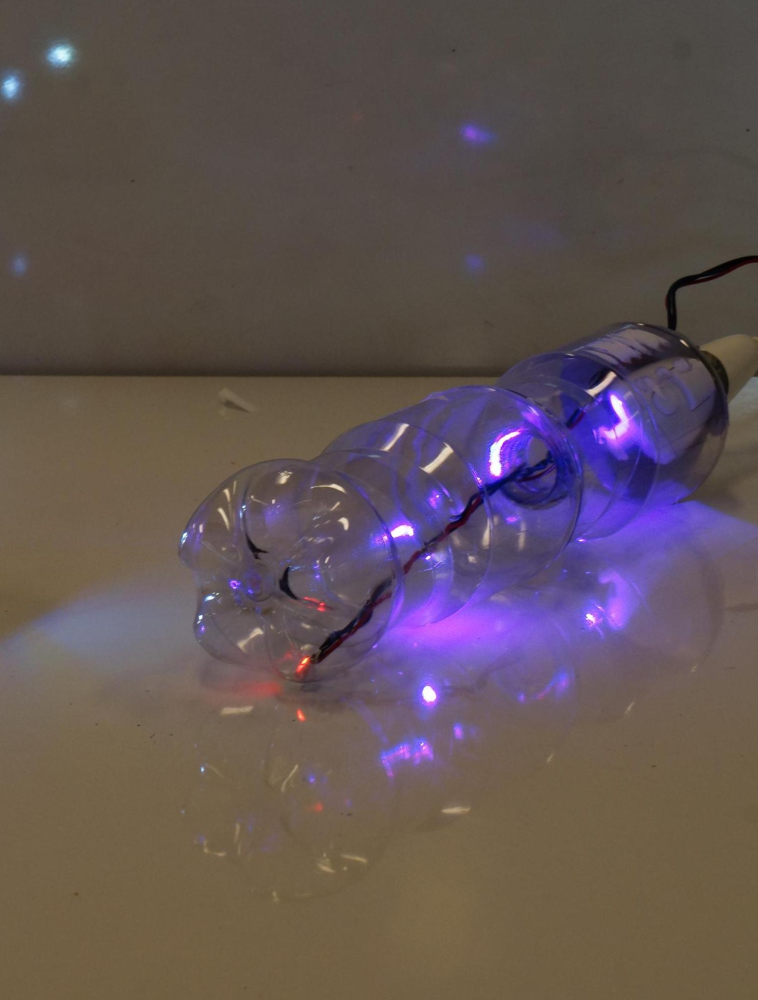

New to Music?
Considering dabbing in music theory?
Welcome to Tonnetz
Considering dabbing in music theory?
Welcome to Tonnetz
What is Tonnetz
Tonnetz is a way of visualizing tonal space first described by Euler. It has been used for understanding tonal progress when writing music and can be seen within Neo-Riemannian music theory.
Tonnetz Magic
With Tonnetz Magic, we look to create an interface for exploring chord progression in particular with respect to exploring music through tonnetz space. As novice musicians, we found tonnetz an easy way to understand chord structures and in particular how notes in chords relate to each other and how chords relate to each other in the progression of music. We hope that Tonnetz Magic can help bring those experiences to other novices and maybe even help to give more experienced musician's more insight in the world of musical theory


How does it work?
Tonnetz Magic uses two separate devices to interact with chord structure. First the Tonnetz Wand which determines the chord through roll gestures and whether that chord is major, minor or augmented through it's pitch. Then the Tonnetz Ball which contain the triggers for playing sounds as well as roll control for reflecting the chord along tonnetz grid lines and pitch controls for transforming the triad chords into seventh chords. Both use accelerometers/gyroscopes as their primary sensors with the Wand using a Wii Nunchuck and the Ball using a MPU 6050 accelerometer.
Video Demo
From sketch to product



Sources used:
https://imgur.com/a/aWIhR
as an introduction for tonnetz
as an introduction for tonnetz
https://cifkao.github.io/tonnetz-viz/
for visualizing tonnetz in real time
for visualizing tonnetz in real time
http://fastled.io/
for working with w2812 LEDS
for working with w2812 LEDS
http://projectgus.github.io/hairless-midiserial/
for outputting a midi signal
for outputting a midi signal
https://howtomechatronics.com/tutorials/arduino/arduino-and-mpu6050-accelerometer-and-gyroscope-tutorial/;
for working with the MPU-6050
for working with the MPU-6050
https://create.arduino.cc/projecthub/infusion/using-a-wii-nunchuk-with-arduino-597254
for working with the Wii Nunchuck
for working with the Wii Nunchuck
https://howtomechatronics.com/tutorials/arduino/arduino-wireless-communication-nrf24l01-tutorial/
for working with the Radio
for working with the Radio